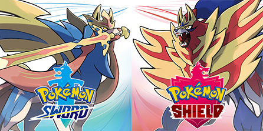

No geral, os jogos de pokemon seguem um caminho linear e parecido em todos os jogos: o jogador precisa derrotar 8 líderes
de ginásio, que possuem times formado por pokemons com um tipo em comum, para então derrotar 4 treinadores mais fortes na chamada
elite 4, e poder batalhar contra o campeão da região onde o jogo se passa, que é o treinador mais forte dela, tudo isso enquanto
uma história é desenvolvida, que inclui uma equipe inimiga com um lider que deve ser derrotado em algum ponto do jogo.

Red & Blue | 1996
São os primeiros jogos da franquia, e os mais vendidos. Foram lançados no
Game Boy original. Sairam originalmente no Japão com o nome Red & Green,
o que foi alterado no lançamento nos EUA. Apesar dos gráficos defasados e
grande quantidade de bugs e glitches, resultados do console onde foi publicado e da
dimensão do jogo, estão entre os jogos mais amados da franquia. Se passam
em Kanto, inspirada na região do Japão de mesmo nome, têm 151 monstros
no total, que podem ter dois dos 15 tipos diferentes, que são fracos ou fortes contra outros.
Gold & Silver | 1999
Foram lançados para o Game Boy Color, uma versão mais sofisticada do
Game Boy original, que permitia cores e uma capacidade de processamento
aprimorada. Por isso, os jogos representaram uma evolução na franquia,
possuindo cores, diferente dos primeiros jogos, menos bugs e glitches,
além de expandi-lo, com uma nova região, Johto, 100 novos pokemon e novas
mecânicas, como um sistema de relógio integrado ao jogo, que usa o horário real e a presença dos
pokemon shiny [ 2 ].
Após o lançamento dos jogos, foi feito algo como uma versão definitiva deles,
com alguns conteúdos novos e alguns recursos novos, incluindo a adição de um
avatar feminino. Além disso, 10 anos após o lançamento dos jogos, em 2009,
foram lançados remakes, Pokemon Heart Gold & Soul Silver, que, como os
dos jogos anteriores, aprimoraram e expandiram o jogo, e são considerados
por muitos parte dos melhores jogos da franquia.
Ruby & Sapphire | 2002
Disponiveis no Game Boy Advance, esses jogos representaram uma grande mudança da franquia, incluindo inúmeras
mecânicas novas, como as habilidades [ 3 ],
as batalhas em dupla, com dois pokemons em campo para cada treinador, tipo de
batalhas que é usado oficialmente nas batalhas competitivas. Esses jogos foram
os primeiros a atingir um nível de performance e visual realmente agradável,
com mais cores e sprites mais bonitos, elemento que seria desenvolvido nos jogos para
Nintendo DS. A história desses jogos foi a primeira a realmente se destacar,
apesar de não estar entre as melhores da franquia atualmente, e a região onde eles
se passam, Hoenn, é uma das melhores dos jogos.

Diamond & Pearl | 2006
São os primeiros jogos da franquia no Nintendo DS, console que tinha suporte
para gráficos tridimensionais, que são usados nos cenários, enquanto os sprites
permanecem no estilo de pixel art, tornando o visual dos jogos incrível e marcante.
Esses são os primeiros jogos a permitirem conexão sem fio com outros dispositivos,
facilitando a troca de pokemon e batalha com outros jogadores. O Nintendo DS possuia
uma tela secundária com touchscreen, permitindo um menu mais agradável. Além disso,
os jogos possuem uma das melhores histórias da franquia e conta com uma das melhores
pokedex [ 4 ] dela.

Black & White | 2010
Para muitos, são os melhores jogos da franquia: também disponiveis no Nintendo DS,
têm visuais incríveis, sendo os primeiros jogos onde os pokemon têm animações durante
as batalhas, elemento repetido em suas sequências, Black & White 2.
O enredo possui alguns dos melhores personagens da franquia e uma história que
é considerada a melhor da franquia, por muitos. Apesar das qualidades, os
jogos foram muito criticados pelos fãs mais antigos no lançamento por não
incluirem os pokemons dos outros jogos e por acharem a pokedex ruim. São os
únicos jogos a terem sequências diretas, que continuam a história e se passam
na mesma região, Unova, apesar desta estar alterada.
X & Y | 2013
São os primeiros jogos inteiramente 3D da franquia, lançados para o Nintendo 3DS.
Apesar disso, os visuais do jogo são inferiores aos dos jogos anteriores: os designs
tridimensionais dos pokemon não são tão bons quanto os originais e eles não se movimentam
o bastante durante as batalhas para torná-las naturais. Apesar disso, os jogos são populares,
provavelmente devido à série de animações de pokemon que lançou com ele, que agradou os fãs, e pela
implementação de uma das mecânicas mais populares da franquia: a megaevolução, que dava novas
formas mais poderosas a pokemons completamente evoluidos e com designs novos, esta que não
foi repetida nos jogos seguintes, mas criou uma tendência dos jogos terem mecânicas
principais e que não são reutilizadas nos próximos.
Sun & Moon | 2016
Esses são provavelmente os jogos mais diferentes da franquia: eles abandonam o dasafio de
ginásios e o substitui pelas trials, onde os jogadores devem derrotar um toten,
um pokemon grande e mais forte que sua versão normal, dinâmica que seria abandonada. Apesar de permanecer 3d, esses jogos tem
um visual aprimorado com relação aos X & Y. A mecânica da vez são os movimentos-z, ataques mais
fortes e que possuem animações especiais, além da introdução das formas regionais, que são pokemon antigos
com designs novos, mecânica repetida nos jogos seguintes.

Sword & Shield | 2019
Foram lançados para o Nintendo Switch, sendo os primeiros jogos a estarem disponiveis em um
console de mesa e o principal da Nintendo na 8º e 9º geração de consoles. Os visuais do jogo
mantém o padrão de qualidade de Sun & Moon, porém as animações têm qualidade baixa, majoritariamente.
A mecânica da vez é o dynamax, que torna o pokemon grande e mais forte e, dependendo do pokemon,
também muda seu design (nesses casos é chamado de gigantamax). A história desses jogos é ruim,
porém não incomoda. Além disso, o jogo é especialmente linear, mesmo comparado aos outros.
Apesar dos problemas, é um jogo divertido.

Scarlet & Violet | 2022
São os jogos mais criticados da franquia, pelos gráficos feios, o desempenho péssimo, a falta de dificuldade,
o design ruim dos pokemon. A mecânica introduzida nos jogos é a terastalização, que muda o tipo do pokemon.
Esse é o primeiro jogo de mundo aberto de pokemon, sendo o jogo menos linear da franquia, apesar de ainda manter
um pouco dessa característica. A história do jogo é o melhor aspecto dele, sendo dividida em três ramos principais,
que convergem no fim do jogo.